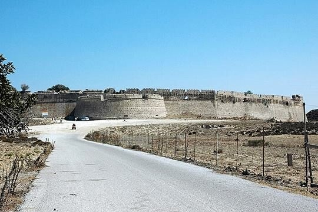
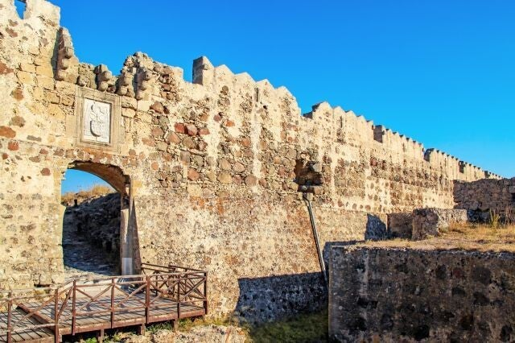
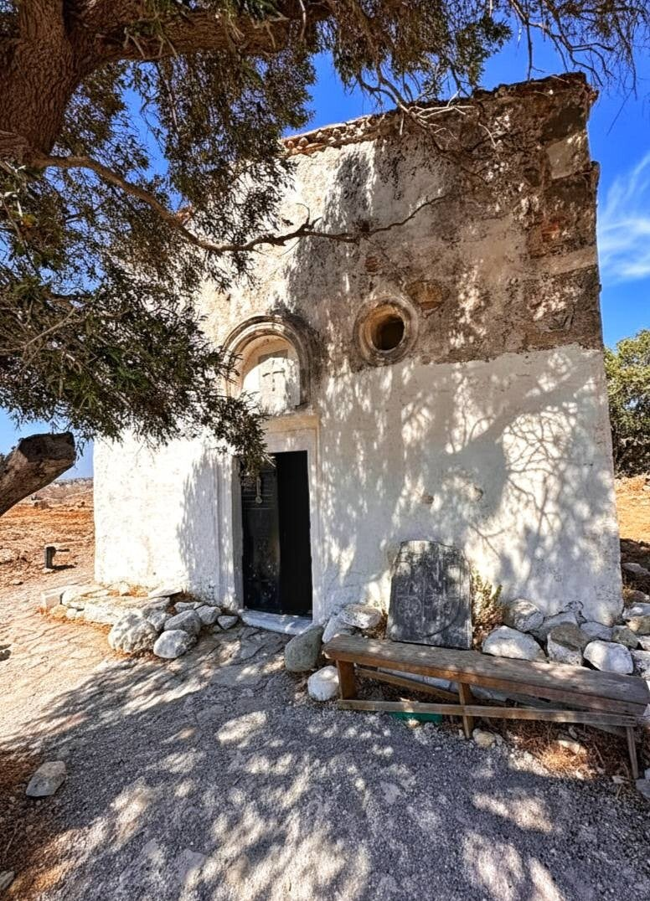

Kasteel van Antimachia
Middeleeuws fort – in 1457 23 dagen standgehouden door 15 ridders en eilanders tegen 16.000 Ottomanen. Gratis toegankelijk.
Fort op de heuvel
Het kasteel ligt op een heuvel bij Antimachia, midden op Kos: dikke muren en strategisch uitzicht over binnenland en zee.
Belegering van juni 1457
Een Ottomaans leger viel Kos aan: zo’n 16.000 soldaten en 156 schepen. Eerst brandden ze het kasteel in Kos-stad, daarna Pyli en Kefalos, en ten slotte Antimachia.
Verdedigd door slechts 15 ridders van de Orde van Sint-Jan en 200–300 eilandbewoners – vaak boeren met eenvoudige wapens. Ze hielden 23 dagen stand (tot 26 juni). De Ottomanen groeven tunnels onder de muren; de verdedigers ontdekten en stopten dat. Uiteindelijk trokken de aanvallers zich terug – een van de heldhaftigste momenten van het kasteel.

Later
Na de aardbeving van 1493 werd het fort herbouwd. De Ottomanen gebruikten het tot 1871 als militaire basis; daarna verviel het langzaam.
Bezoeken
Gratis. Soms staat er iemand verkleed als ridder die een gift vraagt voor een foto – dat is vrijwillig, geen officiële entreeprijs.

Kasteel Kasteel
Kasteel

Kasteel